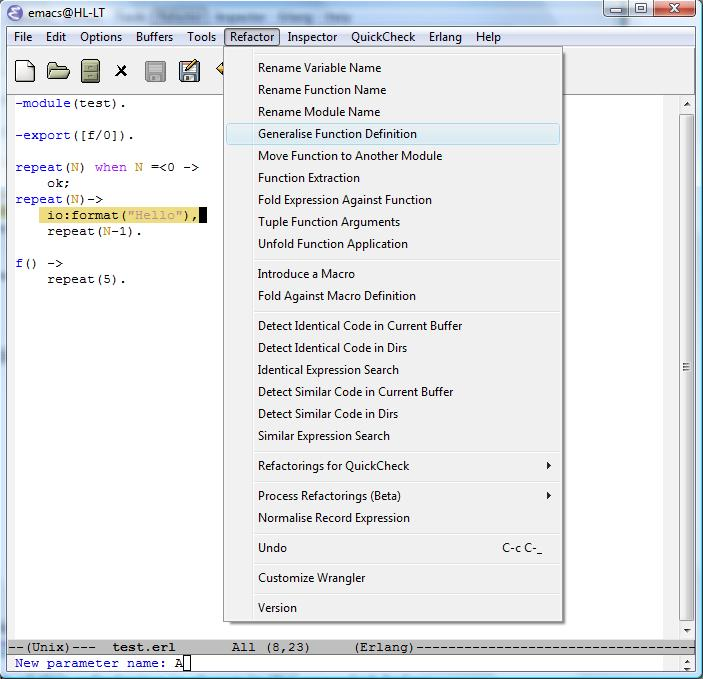
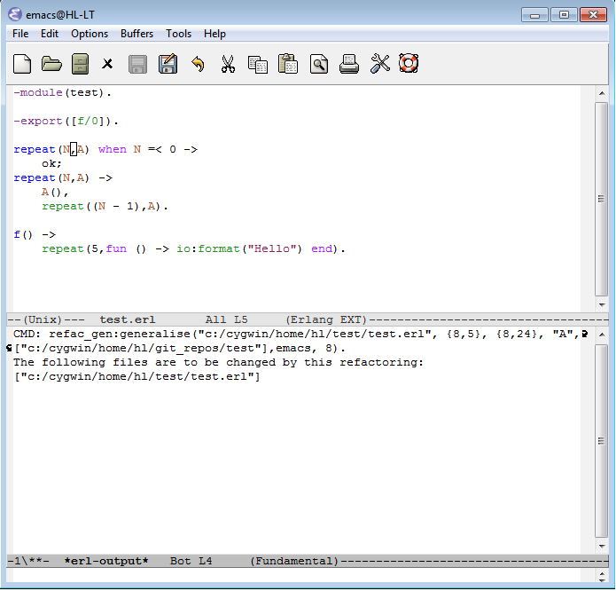
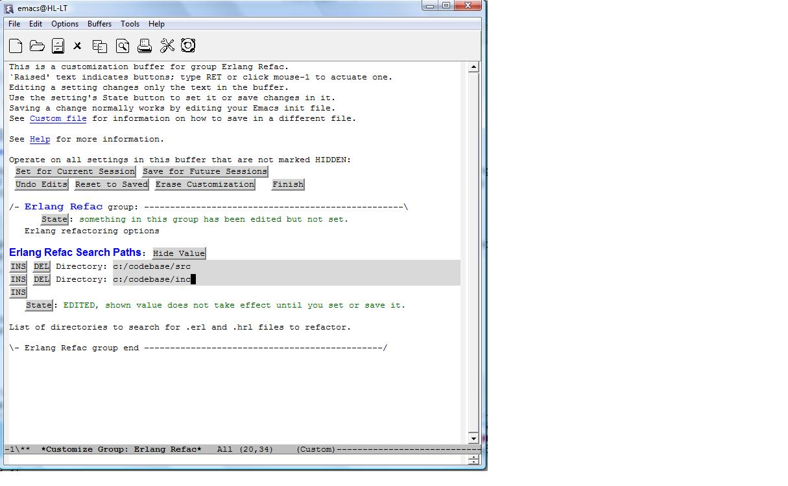
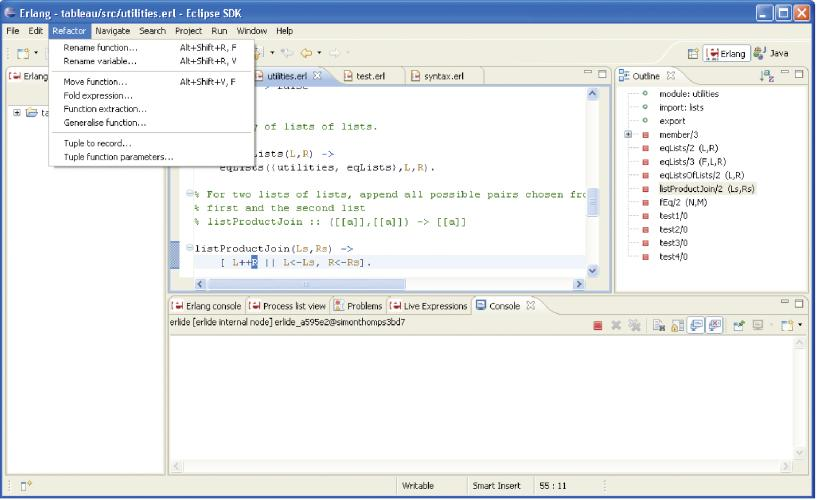

Wrangler - an Erlang Refactoring Tool
Copyright © 2006-2011 Huiqing Li, Simon Thompson
Authors: Huiqing Li (H.Li@kent.ac.uk), Simon Thompson (s.j.thompson@kent.ac.uk) [web site: http://www.cs.kent.ac.uk/projects/wrangler].
Wrangler is an Erlang refactoring tool that supports interactive
refactoring of Erlang programs.
- Introduction
- The Interface of Wrangler
- Support for Macros
- Refactoring Code with Syntax Errors
- Typed Records and Type Specifications
- How to Use Wrangler
- References
- Acknowledgements
Refactoring is the process of improving the design of a program without
changing its external behaviour. While refactoring by hand is possible, tool
support for refactoring is invaluable as it is more reliable, and allows
refactoring to be done (or undone) easily. Wrangler is such a tool that
supports interactive refactoring of Erlang programs. Wrangler currently
supports a number of basic Erlang refactorings, such as renaming of
variable/function/module names, generalisation of a function definition,
function extraction, folding against a function definition, duplicated code
detection, etc.
Built on top of the functionalities provided by the Erlang syntax-tools
package, Wrangler is embedded in the Emacs/Xemacs editing environment, and
makes use of the functionalities provided by Distel, an Emacs-based user
interface toolkit for Erlang, to manage the communication between the
refactoring tool and Emacs.
In collaboration with the Erlide
team, we are now also in the process of integrating Wrangler with the
Eclipse Environment.
Below is a snapshot of Wrangler embedded in Emacs, which shows a particular
refactoring scenario. The user has selected the expression
io:format("Hello") in the definition of repeat/1 , has
chosen the Generalise Function Definition command from the
Refactor sub-menu, and has just entered a new parameter name A in the
mini-buffer.

The result of this refactoring is shown in the snapshot below.

Preview of the changes to be made by a refactoring is supported, and the
user could choose to commit or abort the refactoring result after preview.
All the implemented refactorings are module-aware. In the case that a
refactoring affects more than one module in the program, a message telling
which files have been modified by the refactorer will be given after the
refactoring has been successfully done. The Customize Wrangler
command from the Refactor sub-menu allows the user to specify the
boundary of the program, i.e., the directories that will be searched and
analysed by the refactorer, as shown in the example snapshot below.

Undo is supported by the refactorer. Applying undo once will revert
the program back to the status right before the last refactoring performed.
However, PLEASE NOTE that the refactorer undo is currently separate
from the Emacs undo, and undoing a refactoring will lose all the editing
activities after the refactoring.
Below is a snapshot of Wrangler embedded in Eclipse + Erlide.

Wrangler makes use of functionalities provided by the epp_dodger module
from the Erlang syntax_tools library to parse Erlang source code, and
should be able to refactor Erlang modules containing preprocessor directives
and macro applications, as long as the macro definitions are syntactically
"well-behaved".
Wrangler accepts Erlang programs with syntax errors or macro definitions
that cannot be parsed by epp_dodger. In the case that the program under
consideration has syntax errors or unparsable macros, functions/attributes
to which these syntax errors belong are not affected by the refactoring
process; however, warning messages asking for manual inspection of those
parts of the program are given after the refactoring.
The current implementation of Wrangler does not support typed records and
type specifications yet; functionalities to support these features are being
added however.
- Open an Erlang source file in the Emacs editor. You should now have a
menu called Erlang, if you have configured Emacs properly to
use the Erlang-mode (see the file INSTALL otherwise).
- To start Wrangler, type:
M-x erlang-wrangler-on, or
alternatively Ctrl-c Ctrl-r. After that, two new
menus, Refactor and Inspector, should appear in the
menu bar (see INSTALL otherwise).
- To stop Wrangler, type
M-x erlang-wrangler-off, or
alternatively use Ctrl-c Ctrl-r again. The Refactor and Inspector
menus will disappear from the menu bar.
- You can use
Ctrl-c Ctrl-r to toggle Wrangler on or off.
- For most refactorings, the editor interface will pass the current
filename (should be the module name, as well), the refactoring command,
and the current cursor position. For some refactorings, you'll also
need to highlight an expression, or enter a new name.
- The Customize Wrangler menu in the Refactor submenu allows you
to specify the boundary of the system by giving the list of directories
to search for Erlang source files/header files that could be affected
by a refactoring.
The following is the current list of refactorings:
- Rename variable/function
- Place cursor at the identifier to be renamed; you'll be prompted for a
new name.
- Rename module
- Place cursor anywhere within the module; you'll be prompted for a new
name.
- Generalise definition
- Highlight the expression on which the function is going to be
generalised, you'll be prompted for a new parameter name.
- Move a function definition to another module
- Place cursor anywhere within the function definition; you'll be
prompted for the target module name.
- Function extraction
- highlight the expression/expression sequence that you wish to extract, you'll be prompted for a new function name.
- Fold expression against function
- Place cursor anywhere within the function clause. Wrangler will guide
you through the possible candidates one by one, and ask whether you
want to fold it or not.
- Introduce new macro
- Highlight the expression/pattern that you wish to replace with macro
application, and you'll be prompted from a new macro name.
- Fold against macro definition
- Place cursor anywhere within the function definition. Wrangler will
direct you through the possible candidates one by one, and for each
candidate ask whether you want to fold it or not.
- Tuple function arguments
- Highlight the sequence of parameters to be grouped into a tuple from
the function definition, then select the refactoring command from the
menu.
- Identical expression search
- Highlight the expression/expression sequence you are interested in;
Wrangler will show you the found expression/expression sequences.
- Detect identical code in current buffer
- Select the refactoring command from the menu. You'll be prompted for
the minimum number of tokens a duplicated code fragment should have,
and the number of times that a code fragment is duplicated.
- Detect identical code in directories
- Select the refactoring command from the menu, and you will be prompted
for the minimum number of tokens a duplicated code fragment should
have, and the minimum number of times that a code fragment is
duplicated. Wrangler searches duplicated code fragments from the
directories specified by the search-paths (see Customize Wrangler).
- Similar expression search
- Highlight the expression/expression sequence you are interested, select
the command from the menu, and Wrangler will prompt you to input a
similarity score.
- Detect similar code in current buffer
- Select the refactoring command from the menu, and you'll be prompted
for 5 parameters, i.e. the minimum number of expressions in a
expression sequence, the minimum number of tokens, the minimum and the
maximum number of New_Vars, duplication, and a similarity score.
- Detect similar code in dirs
- Select the refactoring command from the menu, and you'll be prompted
for 5 parameters, i.e. i.e. the minimum number of expressions in a
expression sequence, the minimum number of tokens, the minimum and
maximum number of New_Vars, duplication, and a similarity score.
Wrangler searchs similar code in the directories specified by the
search-paths (see Customize Wrangler).
- Rename a process
- Place the cursor at the process name to be renamed, and you will be
prompted for the new name.
- Register a process
- Highlight the match expression whose right-hand side is the spawn
expression that creates the process, and left-hand side is the process
identifier, and you will be prompted for the new process name.
- From fun to process
- Place the cursor at the function name of the function definition to be
refactored, and you will be prompted for the new process name.
- Add tag to messages
- Place the cursor at the function whose body contains the receive
expression of the server process, and you will be prompted for the tag
name.
- Unfold a function application
- Place the cursor at the function name part of the function application,
then select the Unfold Function Application command.
- Introduce a ?LET
- Highlight the expression which should be a QC generator, then select
the refactoring command; you will be prompted for the pattern variable
name.
- Merge ?LETs
- Select the refactoring command, and Wrangler will guide you through the
possible candidates one by one, and ask whether you want to merge it or
not.
- Merge ?FORALLs
- Select the refactoring command, and Wrangler will guide you through the
possible candidates one by one, and ask whether you want to merge it or
not.
- eqc_statem State To Record
- Select the refactoring command, and Wrangler will check the current
type of the state machine, and prompt you to input the record and field
names if Wrangler is able to proceed the refactoring.
- eqc_fsm State To Record
- Select the refactoring command, and Wrangler will check the current
type of the state machine, and prompt you to input the record and field
names if Wrangler is able to process the refactoring.
- Introduce a new variable
- Highlight the expression of interest, then select Introduce New
Variable from the Refactor menu; Wrangler will then prompt for the
new variable name.
- Inline a variable
- To unfold a particular use instance of a variable, point the cursor to
that instance, and then select Inline Variable from
the Refactor menu. To unfold all (or some) uses of a variable,
point the cursor to the defining occurrence of the variable and select
the refactoring command. Wrangler will then search for uses of the
selected variable, and let you choose which instances to unfold. Only
variables defined via a match expression of the format
VarName = Expr
can currently be inlined.
Our Refactoring
Functional Programs project website contains more information and
references about refactoring functional, especially Haskell, programs; and
our progress and ideas about refactoring Erlang programs are available at
our FORSE project
webpage.
The work was initially supported by EPSRC in the UK, and is now by the
European Commission. We are very grateful that we were able to build the
tool on top of Distel
and
Erlang
SyntaxTools, and make use some of the ideas from
Dialyzer.
Generated by EDoc, Oct 28 2011, 16:29:27.